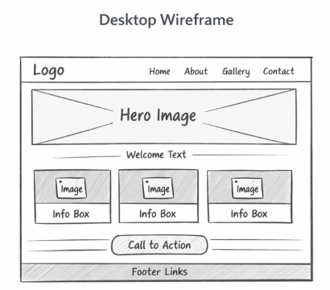
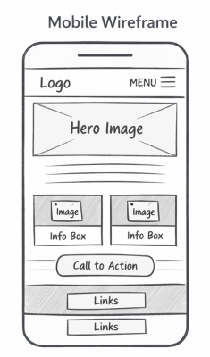

Sierra Leone Cultural Heritage
Site Name: Sierra Leone Cultural Heritage
This name reflects the project’s focus on showcasing Sierra Leone’s traditions, history, and tourist attractions. It emphasizes cultural pride and educational value.
Site Name: Sierra Leone Cultural Heritage
This name reflects the project’s focus on showcasing Sierra Leone’s traditions, history, and tourist attractions. It emphasizes cultural pride and educational value.
The purpose of this site is to provide an engaging hub for learning about Sierra Leone’s cultural traditions, history, and tourist attractions. It will serve students, tourists, and Sierra Leoneans abroad by offering information, interactive features, and resources.
Primary Color: #006400 (Dark Green) – used for headings and accents.
Secondary Color: #FFD700 (Gold) – used for highlights, buttons, and background accents.
Fonts selected:
Headings will use Merriweather for a formal, cultural tone, while body text will use Open Sans for readability.
Below are placeholders for wireframes of the homepage layout:

